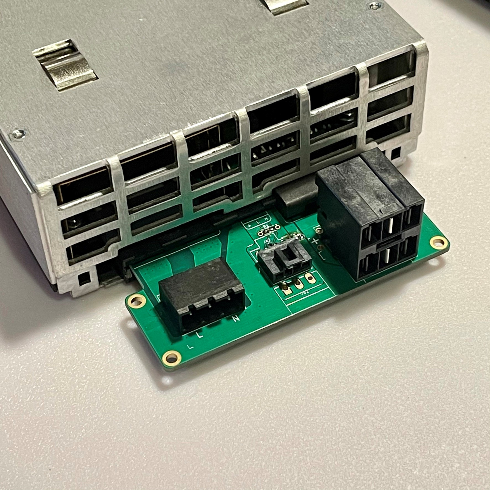
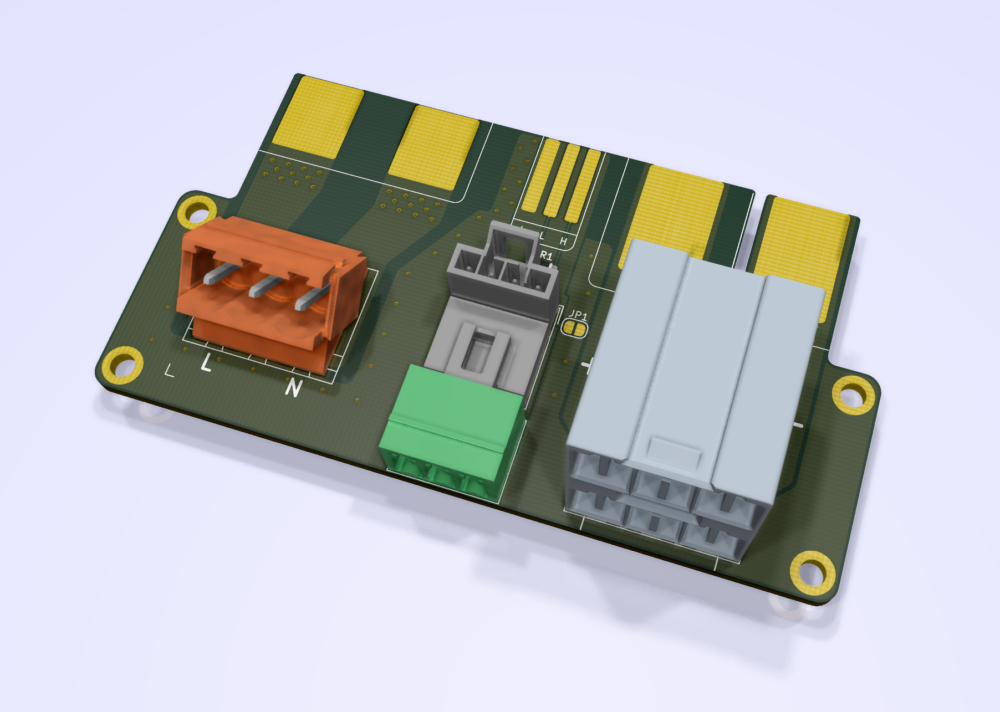

EltekFlatpack2

This is my take on the Eltek Flatpack2 HE AC PSU adapter board (may also work with the DC-DC units); it's got a few nice features I like, like a plethora of connectivity options.
I've probably made some really bad design choices here, please don't judge me.
Update: I've had a ludicrous number of these made, and they work great! 2oz copper & ENIG plated:

Render:

Features
I probably went a little bit overboard with connector options, but I wanted it to be flexible.
JP1 is a solder jumper that connects VOUT+ to J2 pin 1. R1 is an optional 120R CANBUS termination resistor.
AC Input footprints:
- Standard 5.08mm-pitch pluggable terminal block of various kinds (5.0mm ones with small-ish pins should be able to squish into this as well)
- WAGO 256-series (and similar) push-button actuated adjustable-pitch terminal blocks
Controller CANBUS footprints:
- 4-pin 0.1" footprint with pinout VOUT+ CANH CANL GNDD.
- 4P vertical Molex Nano-Fit series 106309-1x04
- 4P horizontal Molex Nano-Fit 105313-1x04
- 3-pin vertical Molex Nano-Fit 106309-1x03 keys into footprint pins 2-4. No controller power, like the secondary footprint.
- 3-pin 3.5mm footprint with pinout CANH CANL GNDD (no controller power)
- Regular horizontal or vertical 3.5mm-pitch pluggable terminal block fits here.
DC output footprints:
- TE Connectivity ELCON Mini 3P RA solder-in, P/N 2204529-1
- TE Connectivity ELCON Mini 6P RA solder-in, P/N 2204535-1
- These will both take P/N 2204534-1 or P/N 2204534-2 plugs. Two fit into the 6-pin connector at the same time.
- Contacts are TE's 5.8/6.3mm Standard Power Timer series, like P/N 927837-5 and are rated for 35A per 3-pin set
- Amass XT60-PW solderable PCB-mount XT60 connector, commonly used for drone/RC shenanigans.
- Rated at 30-60A depending on who you ask.
- The XT60-PW footprint also contains a 5.08mm terminal block pinout, and exposed pads for direct soldering.
Repository Structure
EltekFlatpack2contains the KiCad projectEltekFlatpack2/EltekFlatpack2.prettycontains board-specific footprintsEltekFlatpack2/shapes3Dcontains board-specific STEP models (and a few extra)
Building
Simply call make in the top-top level directory. The build directory will then contain:
- the main board
- A panelized version of said board
- zipped gerbers for the boards you can directly use for manufacturing
Credit where it's due:
Makefile uses Jan Mrázek's KiKit, which I cannot recommend enough, and therefore has to be available on your system.
Jan's jlcparts app was also extremely useful in narrowing down part choices based on what JLCPCB have available.
License

Flatpack2 Adapter by neg2led is licensed under a Creative Commons Attribution-ShareAlike 4.0 International License.